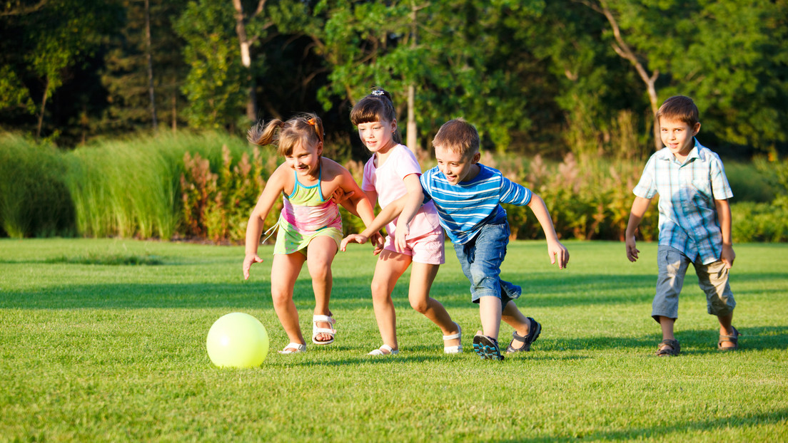
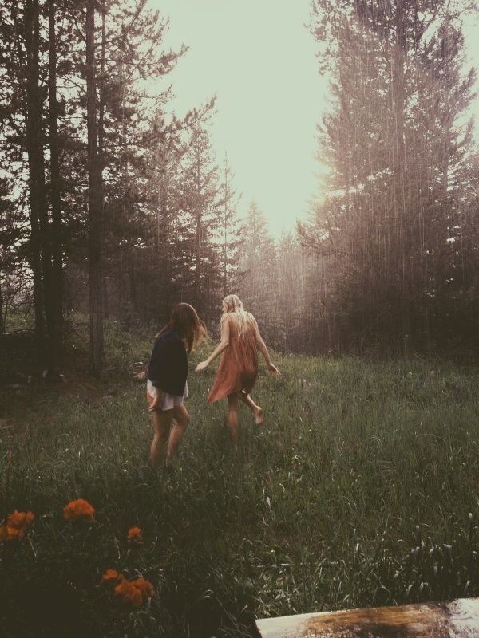

Sport ist Mord. Oder doch nicht? Kommt darauf an, wie man das ganze angeht. Wenn man alles in Mass hält, dann kann es mit den richtigen Leuten sehr viel Spass machen. Hier ein paar Tipps:
Oder doch lieber etwas weniger mit Schweiss? Auch da haben wir einige Tipps auf Lager.
